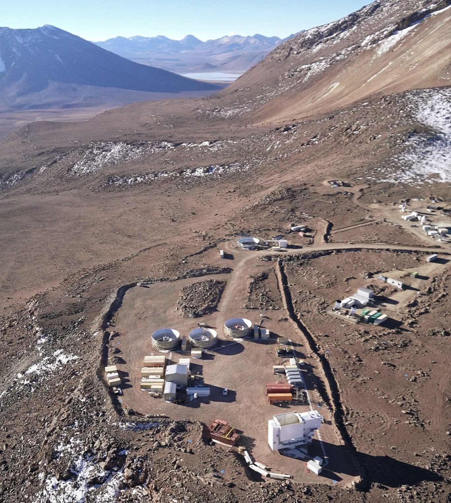

The Simons Observatory
The Simons Observatory is a new cosmic microwave background observatory under construction that is expected to begin scanning the sky in the mid 2020s. The project is an international collaboration of several hundred scientists across a few dozen institutions. With the full cosmological data set, the Simons Observatory is expected to set competitive limits on possible models of cosmic inflation, determine the absolute neutrino mass scale, search for light relic particles in the early universe, study the process of galaxy formation, and constrain the duration of reionization.

Photo: Gabriele Coppi
The Simons Observatory telescopes are located at an elevation of 17,000 feet in the Atacama desert in northern Chile - one of the best microwave observing sites in the world. Over 100,000 superconducting sensors will perform coordinated observations for several years across 6 small-aperture telescopes and 1 large-aperture telescope from 20 GHz to 300 GHz with unprecedented sensitivity. In the picture above from 2024, 3 small aperture telescopes are visible (each surrounded by a circular ground shield) as well as the large aperture telescope (bottom right). The other nearby structures are buildings for power generation, assembly, and storage; a few other millimeter-wave telescopes are also visible on the plateau.
My contributions to the Simons Observatory primarily focus on the cryogenic sensor arrays, and in particular the methods and technology used to measure the changing sensor signals and digitize them on a computer for later analysis. This is achieved using a novel microwave SQUID multiplexed readout scheme. During my postdoctoral work I contributed to the high-throughput production and screening of SQUID chips and studied subtle systematic effects which the readout system induces in the data through modeling and laboratory measurements. Now that the Simons Observatory is beginning to collect real photons from the CMB, my group is turning its attention to characterizing these systematic effects using the high volume of data being produced by the observatory.
Learn more about the Simons Observatory through the following links: